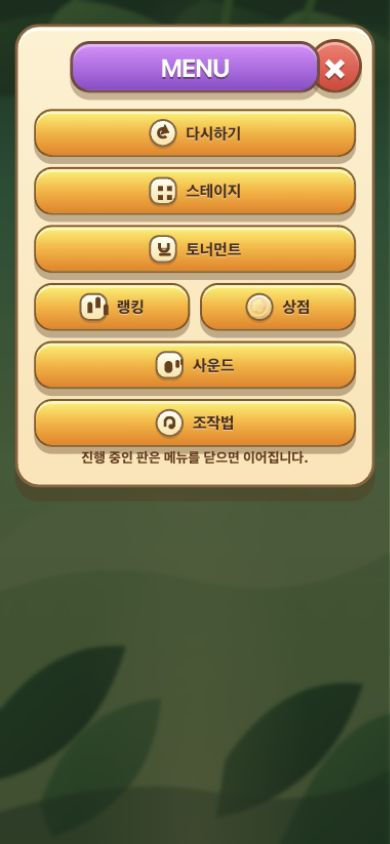
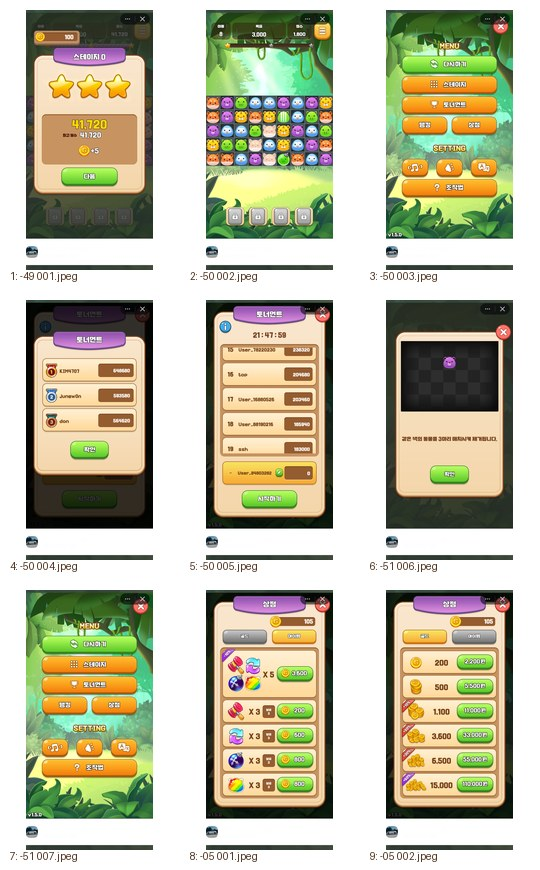
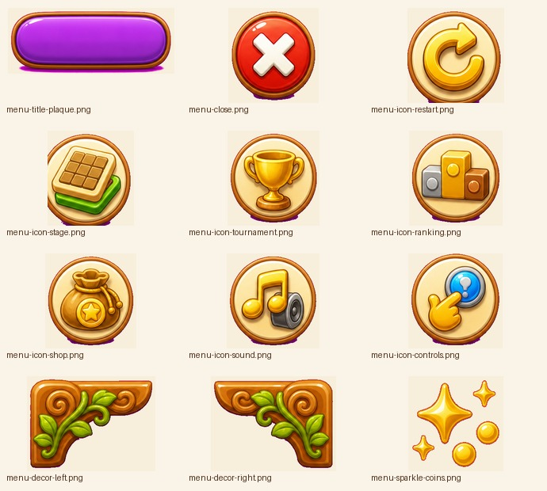

몽글 매치 퍼즐 메뉴 UI 개선 리포트
Lazyweb MCP의 이미지 검색/비교 도구가 현재 도구 표면에 노출되지 않아, 현재 390x844 캡처와 사용자가 제공한 캐주얼 퍼즐 레퍼런스를 기준으로 Lazyweb식 개선 항목을 정리했다.
현재 화면


진단
- 현재 메뉴 아이콘은 CSS로 만든 도형이라 게임 에셋처럼 보이지 않고, 버튼 안에서 작은 표식처럼만 읽힌다.
- 타이틀/닫기 버튼/아이콘의 재질감이 모두 CSS 그라데이션에 의존해 화면 전체가 웹 UI 조합처럼 보인다.
- 버튼 자체를 PNG로 만들면 한글 길이와 반응형에서 깨질 가능성이 커진다. 텍스트는 live DOM으로 유지하고, 아이콘과 장식만 PNG로 분리하는 방식이 가장 안전하다.
- 레퍼런스의 강점은 큰 그림자와 유광 버튼보다도, 타이틀/닫기/기능 아이콘마다 독립적인 캐릭터성이 있다는 점이다.
적용 방향

PNG 에셋화
메뉴 타이틀 플라크, 닫기 버튼, 7개 메뉴 아이콘, 패널 코너 장식만 imagegen PNG로 만든다.
CSS 버튼 유지
버튼의 폭, 높이, 한글 텍스트, 누름 상태, 반응형 레이아웃은 CSS가 관리한다.
아이콘 밀도 강화
CSS glyph를 제거하고 젤리/토큰/리본 느낌의 작은 PNG 아이콘을 넣어 앱다운 질감을 만든다.
클리핑 방지
닫기 버튼을 패널 안쪽으로 배치하고, 타이틀은 절대 위치지만 모바일 폭에서 좌우 안전 여백을 둔다.
구현 체크리스트
- `.menu-glyph-*` CSS 도형 제거 후 `img.menu-action-icon`으로 교체한다.
- `.modal-title`은 PNG 플라크 배경 + live 텍스트 오버레이로 바꾼다.
- `.modal-close`는 버튼 기능은 유지하되 내부 이미지만 PNG로 교체한다.
- 버튼 좌상단 광택 캡슐/동그라미 장식은 제거하고, 버튼 재질은 CSS gradient + shadow로만 유지한다.
- 390x844에서 `.modal-panel`, `.modal-title`, `.modal-close`, `.modal-menu-grid`의 bounding box가 viewport 안에 들어오는지 확인한다.